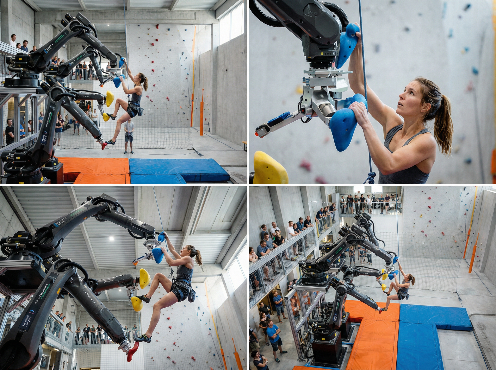

A new kind of climbing where robot arms reshape your wall in real time —
adaptive, infinite, personal.

Nanoclimb uses a closed feedback loop: sensors read the climber, AI infers the next move, robots place the hold — all before your hand reaches for it.
Industrial-grade robot arms with full six degrees of freedom. Precise, fast, and silent — engineered for tight spaces.
Real-time route generation that responds to your movement, strength, and style — creating a truly personal climbing experience.
Designed for urban environments. Nanoclimb can operate in spaces as small as 3m × 3m — garages, basements, studios.
Depth cameras and IMU sensors build a real-time 3D model of the climber's position, enabling sub-100ms response latency.
Every session is logged. Track your movement efficiency, grade progression, and body symmetry over time.
Each climber gets their own profile. The system recognises you, loads your history, and picks up exactly where you left off.
"In that future, the wall becomes intelligent, the route becomes personal, and even the smallest space can hold a vast adventure."
Nanoclimb — Design Manifesto, 2025